- порядок числа 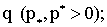
- порядок числа 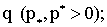Здесь мы обсудим простейшую математическую модель, которая позволит нам понять как формируются погрешности округления вещественных чисел при их записи в память компьютера. Кроме того, рассмотрим вопрос о том, как трансформируются эти погрешности под воздействием арифметических операций.
Условимся считать, что компьютер оперирует только с множеством вещественных чисел {q}, которые могут быть записаны в следующей форме:
| (1) |
где:
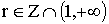 - основание позиционной системы счисления;
- порядок числа 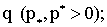
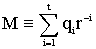 - мантисса числа 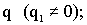
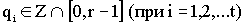 - базисный набор системы счисления, числа 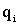 называются разрядами;
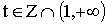 - разрядность мантиссы;
s - принимает значения «0» или «1».
Запись вещественного числа 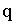 в виде (1) называют его нормализованным представлением в системе с плавающей запятой (точкой). Обозначим символом
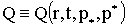 - множество вещественных чисел, представимых в виде (1). Очевидно, что
 - подмножество множества рациональных чисел, кроме того, множество
- симметрично относительно нуля, поэтому в дальнейшем удобно ввести обозначение
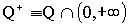 для положительной компоненты этого множества.
- подмножество множества рациональных чисел, кроме того, множество
- симметрично относительно нуля, поэтому в дальнейшем удобно ввести обозначение
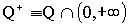 для положительной компоненты этого множества.
Легко найти минимальный элемент во множестве 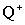:
и максимальный элемент этого множества:
Нам будет удобнее оперировать с числом
которое ограничивает множество  сверху. Очевидно, что множество
сверху. Очевидно, что множество
 , вообще говоря, не замкнуто относительно арифметических операций сложения (+), вычитания (-), умножения
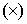 и деления (:). Поэтому операции с произвольными вещественными числами в компьютере организуются по следующим принципам: если
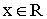 и , то х - считается машинным нулем; если
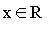 и 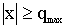, то х - считается машинной бесконечностью. Для
вводится оператор приближения (округления)
, вообще говоря, не замкнуто относительно арифметических операций сложения (+), вычитания (-), умножения
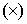 и деления (:). Поэтому операции с произвольными вещественными числами в компьютере организуются по следующим принципам: если
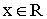 и , то х - считается машинным нулем; если
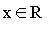 и 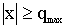, то х - считается машинной бесконечностью. Для
вводится оператор приближения (округления)
который точке х ставит в соответствие ближайшую к ней точку 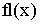 из множества Q. Эту операцию обычно называют операцией округления вещественного числа х (floating- плавающий).
Вводятся понятия абсолютной:
и относительной:
погрешностей округления. Оценку для величины относительной погрешности округления дает следующее утверждение.
Теорема . Пусть , тогда
| (2) |
Доказательство : Не ограничивая общности, можно считать, что . Очевидно, что 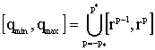. Множество 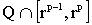 состоит из равномерно распределенных чисел, расстояние между которыми равно 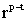. Значит,
Так как 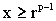, то и приходим к оценке (2):

Компьютерная арифметика использует двоичную систему счисления (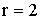 в представлении (1)). Общий формат представления вещественных чисел в памяти компьютера изображен на Рис.1. Здесь приведена разрядная сетка, используемая для записи в памяти ЭВМ вещественного числа вида
| (3) |
S - однобитовое поле, содержащее знаковый бит ”s”; P - поле, состоящее из разрядов, которыми кодируется двоичный порядок числа q; M-(t-1) - разрядное поле, содержащее двоичное представление мантиссы, причем в силу 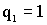 (признак нормализованного числа), записи требуют разряды, начиная со второго. В итоге, для записи числа (3), требуется сетка, состоящая из “k+t” двоичных разрядов. На персональных компьютерах IBM PC и совместимых с ними применяются форматы:
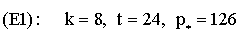 (однократная точность);
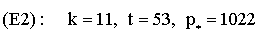 (двойная точность).
Легко подсчитать, что 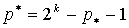, значит 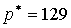 в формате 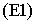, и 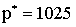 в формате 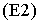. Полезно иметь представление о следующих величинах:
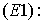 машинный ноль: 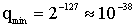;
машинная бесконечность: 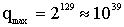;
машинный эпсилон: 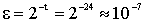
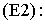 машинный ноль: 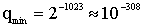;
машинная бесконечность: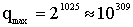;
машинный эпсилон: 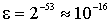.
Представляет интерес вопрос о том, как трансформируются погрешности округления вещественных чисел под воздействием арифметических операций. Ясно, что операции умножения и деления чисел не сильно увеличивают относительную погрешность, хотя могут привести к таким явлениям, как переполнение (нарушение неравенства 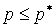, либо потеря порядка (нарушение неравенства ). Вычитание двух близких по величине и достаточно больших чисел может привести к значительному увеличению относительной погрешности и является источником накопления ошибок округления в процессе решения задачи. Исследуем этот феномен. Обозначим символом "" любую из операций "+", или "-". Результат Компьютерной реализации этой операции будет выглядеть следующим образом:
Пусть  - относительные погрешности округления чисел
и - сответственно, тогда справедливы соотношения:
- относительные погрешности округления чисел
и - сответственно, тогда справедливы соотношения:
Используя эти соотношения, приходим к относительной погрешности операции “ ”:
”:
| (4) |
В случае операции сложения (считаем, что ) порядок погрешности (4) не возрастает по сравнению с погрешностями . Действительно, в силу (4) имеем оценку:
 .
.Последнее неравенство в оценке следует из (2). В случае операции вычитания величина
| (5) |
которая возникает в оценке (4), может оказаться достаточно большой, по сравнению с , что приведет к увеличению относительной погрешности . Поясним сказанное на примере.
Пример 1. Предположим, что мы вычисляем наименьший корень уравнения , используя формулу:
| (6) |
Предположим, для определенности, что мы оперируем с числами из множества Q с величины в данном случае не имеет значения. Иными словами, вычисления производятся в десятичной системе счисления, причем в мантиссе числа удерживается 4 разряда. Точным при этом будем считать результат, полученный при вычислении с достаточно большим числом разрядов в мантиссе. Обозначим: , тогда:
| (7) |
Далее:
| (8) |
Причем:
Сравнивая величины (7) и (8), легко видеть, что относительная погрешность, вычисленная по формуле (4) достаточно велика:
и составляет около 100% от точного результата. В данном случае величина (5) будет иметь вид:
и оказывается достаточно большой из-за малости и достаточно большого значения (см.(7)).
Избежать больших погрешностей при вычислении величины (6) можно “заменив” операцию вычитания операцией сложения:
| (9) |
Теперь, используя формулу (9), получим:
что согласуется с
(7) достаточно хорошо